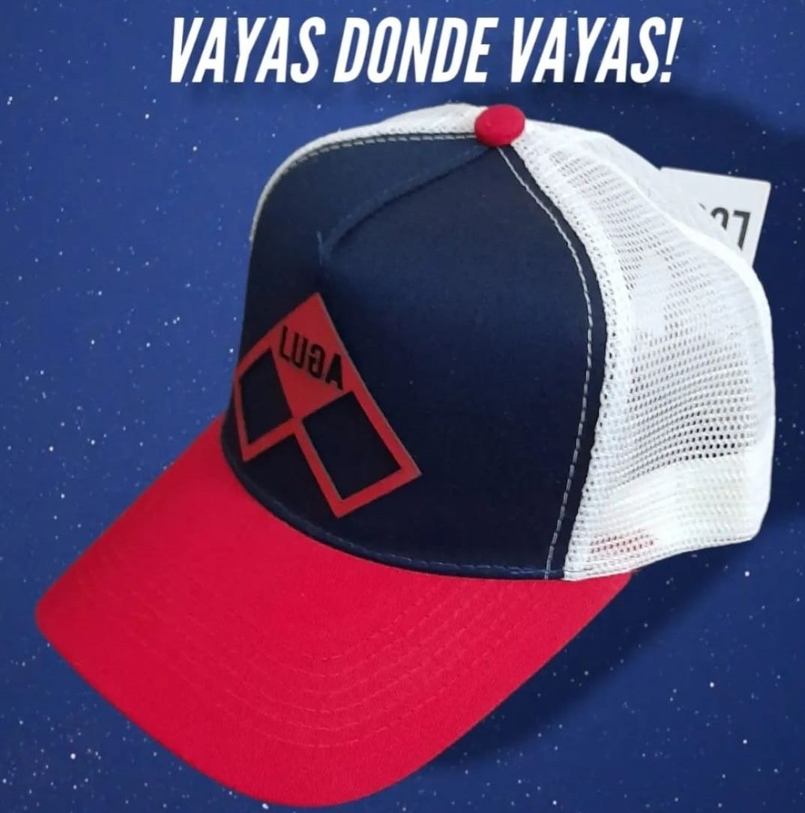

Nuestra empresa
Se especializa en gorras Trucker o también conocidos como gorro de camionero (Trucker Hat), o gimme cap en Estados Unidos, es un modelo de gorra estilo béisbol, con la diferencia de que tiene malla en la parte trasera o posterior del gorro, esta es su principal diferencia con otros modelos.
